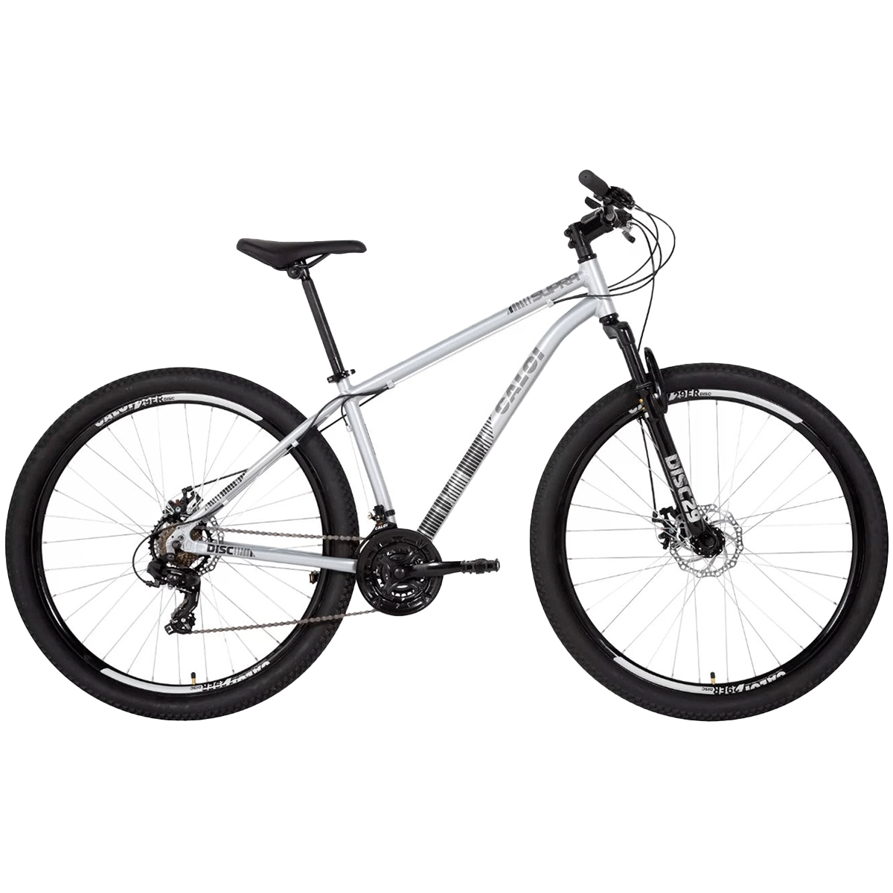

Caloi Supra
Versátil e robusta, a Caloi Supra é perfeita para quem procura aventuras urbanas e trilhas leves com conforto e segurança.
Especificações Técnicas
- Quadro: Alumínio 6061 tratado, conformado, suporte para freio a disco standard.
- Garfo: Suspensão com 60mm de curso.
- Aros: Alumínio VZAN P68.
- Cubos: Aço com raios zincados.
- Pneus: 29x2.25 para aderência e estabilidade.
- Freios: Disco mecânico.
- Câmbio: Traseiro Shimano Tourney TZ300 7v.
- Passadores: Triguer 3/7v para trocas suaves.
- Selim: DDK confortável.
- Movimento de Direção: Ahead.